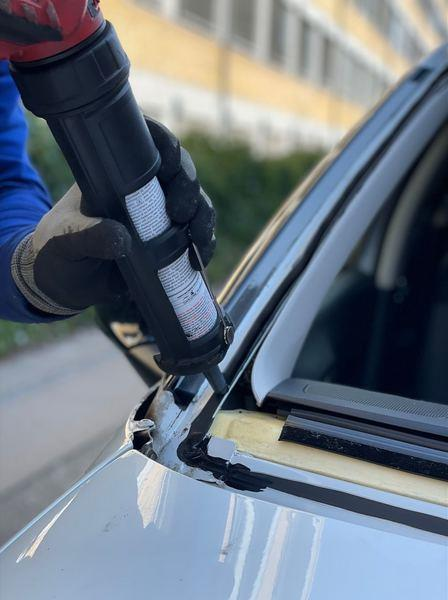

Автосервис в Домодедове
Автостёкла.
Тонировка.
Сигнализации.
Установка и ремонт автостёкол,
тонирование, продажа и установка сигнализаций.
+7 (499) 707-13-30Пн–Пт до 20:00 · Сб до 17:00
Что нужно
вашему автомобилю?
Выберите услугу и позвоните.
Стоимость уточняйте по телефону.
- Уточняйте по телефону
Автостёкла
Установка и ремонт
- Уточняйте по телефону
Тонировка
Тонирование автостёкол
- Уточняйте по телефону
Сигнализации
Продажа и установка

Установка автостёкол Иллюстративное фото

Тонирование Иллюстративное фото
По отзывам клиентов
За что
нас хвалят
- Быстро выполняют работы
- Аккуратно тонируют стёкла
- Вежливо общаются и отвечают на вопросы
Начните со звонка
Уточните детали перед поездкой.
Расскажите о задаче
Позвоните и назовите нужную услугу и модель автомобиля.
Согласуйте детали
Уточните стоимость работ и удобное время визита.
Приезжайте в сервис
Домодедово, улица Корнеева, 14.
Домодедово · Центральный микрорайон
Корнеева, 14
- Пн–Пт
- 09:00–20:00
- Сб
- 09:00–17:00
- Вс
- Закрыто
Тон+ · Автосервис
Согласуем время?
Позвоните, чтобы уточнить стоимость и записаться.